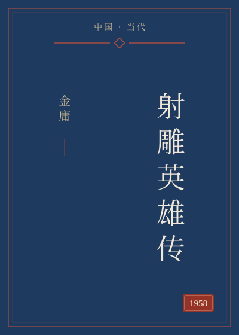
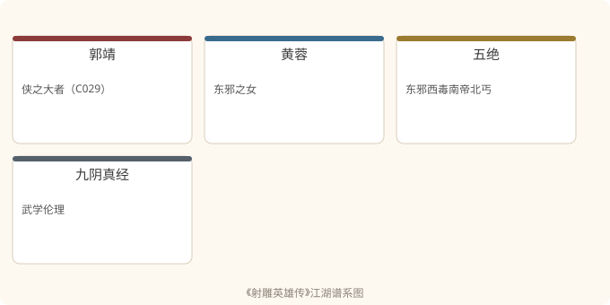

射雕英雄传
一、基本信息
| 作者 | 金庸 |
|---|---|
| 成书/出版 | 1957—1959年连载（通说待核）；'他创作15部脍炙人口的小说'之一（人民日报海外版 C029） 《金庸，带着武侠梦远去了》（人民日报海外版）（官方媒体） |
| 国别/地区 | 中国 |
| 时代 | 现当代 · 当代 |
| 体裁 | 长篇武侠小说 |
| 语言 | 汉语（白话·章回余韵） |

《射雕英雄传》江湖谱系图（主题·结构图）
二、创作背景
人民日报海外版（C029）：金庸'创作15部脍炙人口的小说'；'飞雪连天射白鹿，笑书神侠倚碧鸳'为其中14部书名首字对联；'由其小说改编的影视作品约100部'。
金庸侠义观自述：'引申出去就是侠之大者，为国为民'（C029）。
三、内容脉络
郭靖：蒙古草原的傻小子成长为'为国为民'的大侠——华山论剑与襄阳危局（通说）。
黄蓉、东邪西毒南帝北丐中神通的江湖谱系（通说）。
《九阴真经》与武学伦理（通说）。
四、主要人物表
| 人物 | 身份 | 说明 |
|---|---|---|
| 郭靖 | 大侠 | 笨拙的侠之大者（通说） |
| 黄蓉 | 东邪之女 | 机敏的女主角（通说） |
| 洪七公 | 丐帮帮主 | 北丐（通说） |
| 欧阳锋 | 西毒 | 反派（通说） |
五、主题与艺术特点
- 侠之大者，为国为民（C029 金庸自述）。
- 历史（宋金蒙）与虚构的缝合（通说）。
- 成长叙事：武功即人格修炼（通说）。
六、影响与评论
- 人民日报海外版：15部小说；影视改编约100部；'赤子丹心，侠肝义胆'（C029）。
《金庸，带着武侠梦远去了》（人民日报海外版）（官方媒体） - 新武侠文类的定型之作（通说待核）。
《金庸，带着武侠梦远去了》（人民日报海外版）（官方媒体）
七、阅读建议
难点
- 三部曲世系（射雕—神雕—倚天）。
- 历史年代（南宋）与武林地理。
- 《射雕英雄传》（广州出版社/三联书店版，通说待核）。
先本作 →《神雕侠侣》→《倚天屠龙记》。
八、待核实
- 连载报刊（香港商报说）与日期核对。
- 人物武功名目核对。
- 金庸小说的版本修订史（连载本/修订本/新修版）待核。
本页主要来源
金庸的其他收录作品：射雕英雄传